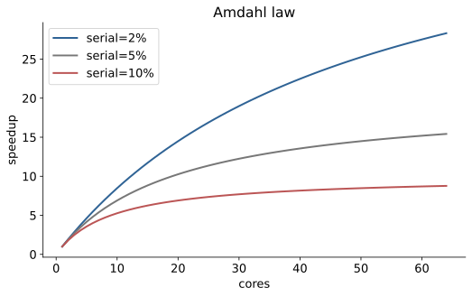
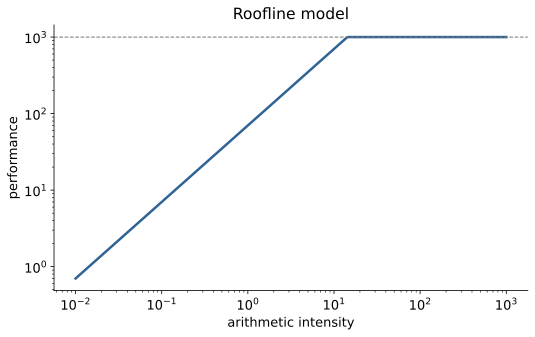
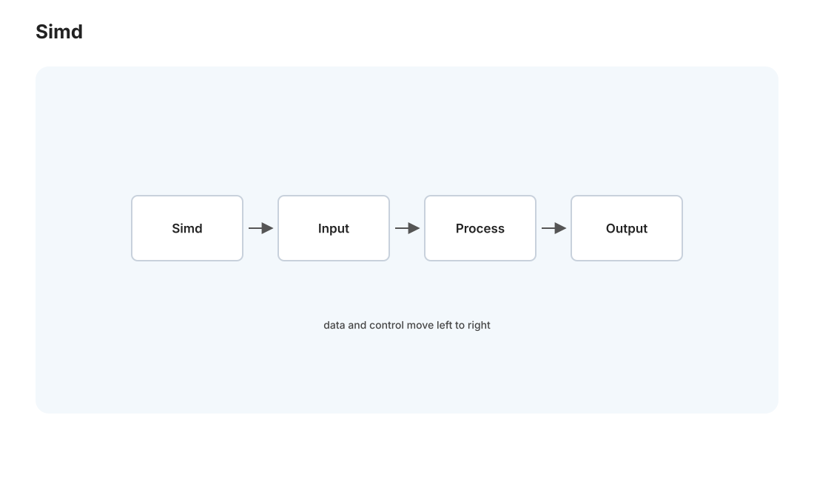

性能 I · 测量、Roofline 与向量化
对标：MIT 6.172（性能工程）/ Agner Fog 优化手册 ｜ 前置：csapp-01/02（机器表示、缓存） 性能工程是把"能跑"变成"跑得快"的学问，也是你（数学 + 系统底子）最能出成果的方向之一。它的第一原则反直觉却至关重要：先测量，别猜。这一页建立性能的科学方法——怎么找瓶颈、Roofline 模型怎么告诉你"该优化什么"、以及现代 CPU 的两大加速武器（流水线与 SIMD 向量化）怎么用。
1. 性能工程的第一铁律：测量，不要猜

程序员对"哪里慢"的直觉几乎总是错的——瓶颈常在意想不到的地方（一个没注意的 O(n²)、一次意外的磁盘 I/O、缓存不命中）。所以铁律是：
先剖析（profile）定位真正的热点，只优化那 5% 真正耗时的代码。
- Amdahl 定律：优化占比 \(p\) 的部分、加速 \(s\) 倍，总加速 \(=\frac{1}{(1-p)+p/s}\)。推论：只占 5% 的代码就算优化到无穷快，总共也只快 5%——优化非瓶颈是白费力气。这条定律是"先测量"的数学依据，也是并行加速的上限（par-01 再用）。
- 工具：
perf（Linux）、Instruments（Mac）、火焰图（flamegraph）——看哪个函数占了最多时间、缓存命中率、分支预测失败率。学会读火焰图是性能工程的入场券。
方法论：建立"测量 → 找瓶颈 → 优化 → 再测量验证"的闭环，永远用数据说话。每次优化都要有 before/after 的数字，否则你不知道是真快了还是心理作用（甚至变慢了）。
2. Roofline 模型：该优化什么

优化前要判断：程序是算力受限（compute-bound）还是内存受限（memory-bound）？——这决定优化方向。Roofline 模型用一张图回答：
- 横轴：算术强度（arithmetic intensity）= 每字节内存访问做多少次浮点运算（FLOP/Byte）。
- 纵轴：可达性能（FLOP/s）。
- 屋顶由两条线构成：斜线 = 内存带宽限制（低算术强度时，性能被搬数据的速度卡住）、平线 = 峰值算力限制（高算术强度时，被 CPU 算力卡住）。
你的程序落在哪决定策略： - 内存受限（在斜线下，多数朴素程序）→ 优化数据访问：改善局部性、分块、减少访存（🔗 csapp-02、perf-02）。加更多计算单元没用，得喂饱它们。 - 算力受限（在平线下）→ 优化计算：向量化、用更少指令、更好算法。
这就是为什么矩阵乘法要分块（csapp-02 的 L01）：朴素版内存受限（算术强度低），分块提高数据复用 = 提高算术强度 = 把程序从内存屋顶推向算力屋顶。Roofline 是"先诊断再开药"的性能地图——HPC 工程师的第一张图。
3. 现代 CPU 的两大加速武器

朴素的"一条指令一条指令顺序执行"远没榨干现代 CPU。两个必须理解的机制：
① 流水线与乱序执行：CPU 把每条指令拆成多个阶段（取指/译码/执行/写回）流水线并行，还会乱序执行（后面无依赖的指令先跑）、推测执行（猜分支方向提前跑）。
- 杀手——分支预测失败：if 猜错要清空流水线（十几个周期），难预测的分支（数据无规律）极伤性能。著名案例："排序后的数组遍历比未排序快数倍"——因为排序让分支变得可预测。优化手段：用无分支代码（条件移动、位运算）替代难预测分支。
- 数据依赖：一条指令等另一条的结果就没法并行——打破依赖链（如多个累加器并行求和）能显著提速。
② SIMD 向量化：一条指令同时对多个数据做同样运算（Single Instruction Multiple Data）——AVX 一次算 8 个 float、512 位一次 16 个。理论上直接 8~16× 加速。三种用法：
- 靠编译器自动向量化（-O3，最省事但脆弱——循环有依赖/别名/复杂控制流就失败）。
- 编译器提示（#pragma、restrict 消除别名疑虑让编译器敢向量化）。
- 手写 intrinsics（_mm256_add_ps，最可控但费力）。
这就是 [实验 L07]：点积的标量版 / 编译器自动向量化版 / 手写 SIMD 版三者对比，实测加速比——亲手看到"一条指令算 8 个数"的威力，也看到编译器什么时候会/不会帮你向量化。
4. 数据导向设计（DOD）：布局即性能
现代性能优化的一大范式转变——从"面向对象"到"面向数据"：
- AoS（结构体数组） struct{x,y,z} points[N] vs SoA（数组的结构体） struct{x[N],y[N],z[N]}：若只处理 x，SoA 让 x 连续 → 缓存友好 + 可向量化（🔗 csapp-02、db-01 列存同理）。
- "设计数据布局以匹配访问模式和硬件"——游戏引擎、数据库、ML 框架的共同心法。性能常常不在算法在布局。
5. 练习与要点
例 1（Amdahl 算账） 一个程序 60% 时间在函数 A、40% 在 B。把 A 加速 5×，总加速多少？（\(\frac{1}{0.4+0.6/5}\approx 1.9×\)）——理解"为什么优化前必须先知道占比"。
例 2（分支预测实验） 遍历数组累加"大于阈值"的元素，对比数组排序前后的耗时——排序后快数倍，亲眼见分支预测的代价。这是最震撼的性能 demo 之一。
例 3（Roofline 定位） 判断"向量点积"和"N 体引力模拟"各是内存受限还是算力受限（点积算术强度低=内存受限、N 体每对都算=算力受限）——据此决定优化方向，Roofline 思维上手。\(\blacksquare\)
▶ 实验 L07（SIMD 与向量化）：
labs/L07-simd/—— 点积三版本（标量/自动向量化/intrinsics）+ 分支预测 demo。跑在 Mac（C）。
下一页：性能 II——缓存优化实战：把 csapp-02 的缓存理论变成具体的优化手法和一个"优化 100×"的大挑战。